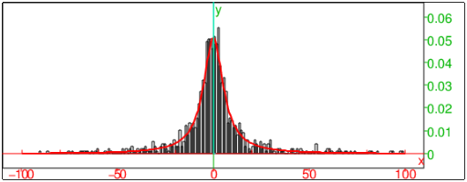

8.4.23 Distribution fitting by maximum likelihood: fitdistr
The fitdistr command finds the parameters for a distribution
of a specified type that best fits a set of samples.
-
fitdistr takes two arguments:
-
L, a list of presumably independent and identically
distributed samples.
- distr, a distribution type, which can be one of:
-
normal or normald, for a normal distribution.
- exp, exponential of
exponentiald, for an exponential distribution.
- poisson, for a Poisson distribution.
- geometric, for a geometric distribution.
- gammad, for a gamma distribution.
- betad, for a beta distribution.
- cauchy or cauchyd, for a Cauchy
distribution.
- weibull or weibulld for a Weibull
distribution.
- fitdistr(L,distr)
returns the name of the specified type of distribution with
parameters that fit L most closely according to the method of maximum
likelihood.
Examples
-
Input:
fitdistr(randvector(1000,weibulld,1/2,1),weibull)
Output:
| weibulld | ⎛
⎝ | 0.517079036032,1.05683817484 | ⎞
⎠ |
- Input:
X:=randvar(normal,stddev=9.5):; Y:=randvar(normal,stddev=1.5):; S:=sample(eval(X/Y,0),1000):; Z:=fitdistr(S,cauchy)
Output:
| cauchyd | ⎛
⎝ | 0.347058460176,6.55905486387 | ⎞
⎠ |
- Input:
histogram(select(x->(x>-100 and x<100),S)); plot(Z(x),x=-100..100,display=red+line_width_2)
Output:

- Input:
kolmogorovt(S,Z)
Output:
⎡
⎣ | "D=",0.0161467485236,"K=",0.510605021406,"1-kolmogorovd(K)=",0.956753826255 | ⎤
⎦ |
The Kolmogorov-Smirnov test indicates that the samples from S are drawn from Z with high probability.
You can fit a lognormal distribution to samples x1,x2,…,xn by
fitting a normal distribution to the sample logarithms log
x1,logx2,…,logxn because log-likelihood functions are the
same. For example, generate some samples according to the lognormal
rule with parameters µ=5 and σ2=2:
Input:
X:=randvar(normal,mean=5,variance=2):; S:=sample(eval(exp(X),0),1000):;
Then fit the normal distribution to logS:
Input:
Y:=fitdistr(log(S),normal)
Output:
normald(5.04754808715,1.42751619912)
The mean of Y is about 5.05 and the variance is about 2.04. Now
the variable Z=exp(Y) has the sought lognormal distribution.